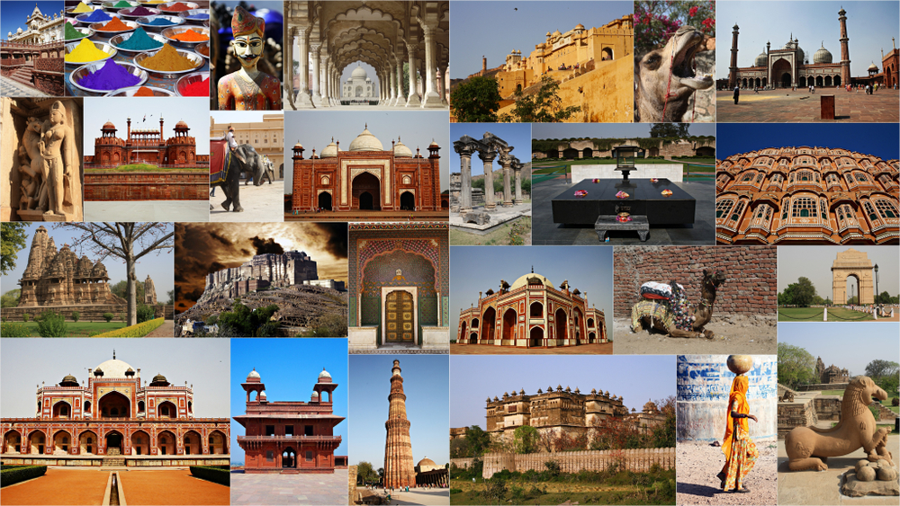

Transformative Power of Travel: Why You Should Explore India
Travel has the incredible ability to broaden our horizons, challenge our perspectives, and enrich our lives in ways we never thought possible. One destination that stands out as a treasure trove of diverse experiences is India. With its rich history, vibrant culture, and breathtaking landscapes, India offers a transformative journey that can leave a lasting impact on any traveler. In this blog, we will explore the reasons why you should consider embarking on a transformative adventure through the incredible tapestry of India.
Cultural Tapestry:
India is a kaleidoscope of cultures, traditions, and customs that have evolved over thousands of years. From the colorful festivities of Holi to the serene rituals along the Ganges, each region in India tells a unique story. By immersing yourself in this cultural tapestry, you not only gain a deeper understanding of India's history but also witness the beauty of unity in diversity.
Spiritual Awakening:
India is known as the birthplace of several major religions, including Hinduism, Buddhism, Jainism, and Sikhism. The country is dotted with ancient temples, mosques, churches, and monasteries that serve as spiritual hubs. Whether you seek solace in the tranquility of Varanasi, meditate in the Himalayas, or explore the spiritual teachings of ancient gurus, India provides a transformative space for spiritual exploration and self-discovery.
Culinary Delights:
Indian cuisine is a feast for the senses, renowned for its aromatic spices, diverse flavors, and mouth-watering delicacies. Each region in India boasts its own culinary specialties, offering a gastronomic adventure that will tantalize your taste buds. From the fiery curries of the south to the delectable street food of Delhi, exploring India through its food is a
Architectural Marvels:
India is home to some of the world's most awe-inspiring architectural wonders. From the timeless beauty of the Taj Mahal to the ancient caves of Ellora and the intricately carved temples of Khajuraho, every monument tells a tale of India's rich architectural heritage. Witnessing these marvels in person not only transports you to different eras but also instills a sense of awe and reverence for human creativity and ingenuity.
Nature's Bounty:
Beyond its bustling cities and historical sites, India is blessed with diverse natural landscapes. From the pristine beaches of Goa to the lush greenery of Kerala's backwaters and the majestic peaks of the Himalayas, India's natural beauty is awe-inspiring. Connecting with nature in India allows for moments of introspection, rejuvenation, and a deep appreciation for the planet's biodiversity.
Conclusion :
Embarking on a journey through India is not just a vacation; it's a transformative experience that can reshape your worldview and leave an indelible mark on your soul. The country's rich tapestry of culture, spirituality, cuisine, architecture, and nature makes it a must-visit destination for anyone seeking personal growth and self-discovery through travel. So, pack your bags, open your mind, and let the transformative power of India guide you on a journey of a lifetime.